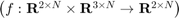
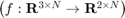

create_uni_to_si_mapping
Returns a mapping from unicycle to single-integrator dynamics  and a mapping between their states  Using this particular method, the single-integrator dynamics must be computed in the single-integrator domain.
Contents
Example Usage
% si === single integrator [uni_to_si_dyn, si_to_uni_states] = create_uni_to_si_mapping('ProjectionDistance', 0.05) uni_states = si_to_uni_states(robot_poses) dx_uni = uni_algorithm(uni_states) dx_si = uni_to_si_dyn(dx_uni, states)
Implementation
function [uni_to_si_dyn, si_to_uni_states] = create_uni_to_si_mapping(varargin) parser = inputParser; addOptional(parser, 'ProjectionDistance', 0.05); parse(parser, varargin{:}); projection_distance = parser.Results.ProjectionDistance; uni_to_si_dyn = @uni_to_si; si_to_uni_states = @si_to_uni_states_; T = [1 0; 0 projection_distance]; % First mapping from SI -> unicycle. Keeps the projected SI system at % a fixed distance from the unicycle model function dxi = uni_to_si(dxu, states) N = size(dxu, 2); dxi = zeros(2, N); for i = 1:N dxi(:, i) = [cos(states(3, i)) -sin(states(3, i)); sin(states(3, i)) cos(states(3,i))] * T * dxu(:, i); end end % Projects the single-integrator system a distance in front of the % unicycle system function xi = si_to_uni_states_(uni_states, si_states) xi = si_states(1:2, :) - projection_distance*[cos(uni_states(3, :)) ; sin(uni_states(3, :))]; end end